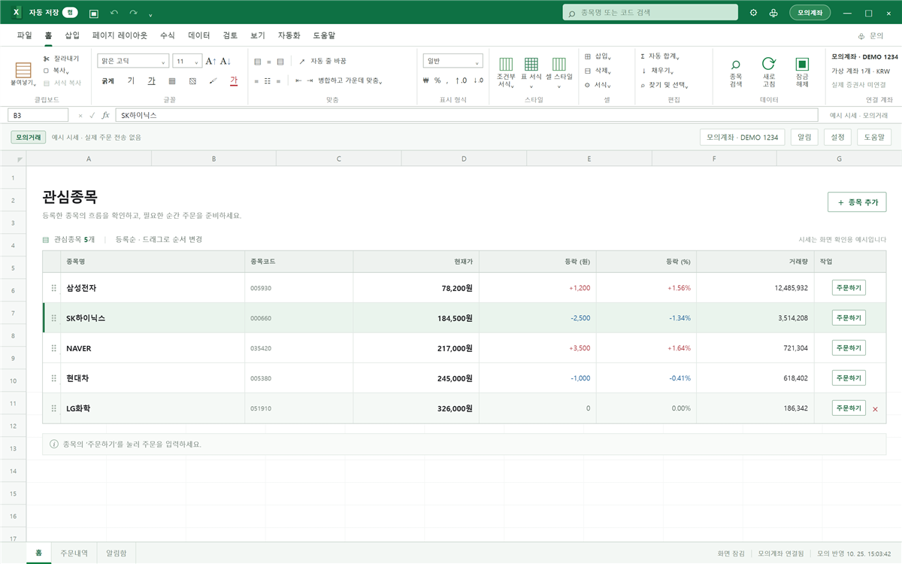

테스트 버전 0.4.0-beta.2
익숙한 표에서 시작하는
익숙한 표에서 시작하는
투자 관리, 셀스탁
관심종목 시세와 주문을 엑셀처럼 한 화면에서. Python 같은 개발 도구 없이 설치만 하면 바로 쓸 수 있어요.

데모 데이터로 찍은 화면이에요. 실제 시세·계좌 정보가 아닙니다.
설치 방법
-
설치 파일 실행
받은
Cellstock-…-Setup.exe를 더블클릭하고 ‘다음’을 눌러 설치를 마쳐요. 시작 메뉴와 바탕화면에 셀스탁 아이콘이 생겨요. -
본인 API 키 연결
나무Plug에서 직접 발급한 APP KEY·APP Secret을 입력하고, 계좌를 고른 뒤 앱 비밀번호를 정해요.
-
관심종목 추가
처음엔 관심종목이 비어 있어요. ‘종목 검색하기’로 원하는 종목을 추가하면 시세를 실시간으로 받아요.
“Windows의 PC 보호” 창이 뜨면
아직 코드 서명이 없는 테스트 버전이라 Windows가 처음 보는 프로그램으로 경고해요. 이 페이지에서 받은 파일이 맞다면 아래처럼 진행하세요.
- 창의 추가 정보를 눌러요.
- 앱 이름이
Cellstock인지 확인하고 실행을 눌러요.
브라우저가 “자주 다운로드되지 않는 파일”이라고 하면 다운로드 목록에서 유지를 선택하세요. 걱정되면 아래 SHA-256 값으로 파일을 확인할 수 있어요.
받기 전에 꼭 확인하세요
내 정보는 내 PC에만
- 개발자의 키·계좌는 들어 있지 않아요. 각자 본인 키로 연결해요.
- 인증정보는 앱 비밀번호와 Windows 보호 기능으로 암호화해 내 PC에 저장해요.
- 키·토큰·앱 비밀번호·계좌번호를 누구에게도 보내지 마세요. DM으로 요청하는 사람이 있다면 사칭이에요.
테스트 버전의 범위
- 일반 계좌 주문은 실제 거래예요. 처음엔 모의투자 계좌로 써 보길 권해요.
- 실제 계좌의 주문 접수·체결은 아직 검증하지 않았어요.
- 국내주식 KRX 현금 매수/매도, 지정가/시장가, 당일 주문내역을 지원해요.
- AI 자동매매 기능은 없어요.
파일 확인 (SHA-256)
받은 파일이 원본과 같은지 확인하고 싶다면 PowerShell에서 아래 명령을 실행해 값을 비교하세요.
Get-FileHash .\Downloads\Cellstock-0.4.0-beta.2-Setup.exe
Cellstock-0.4.0-beta.2-Setup.exe
b59f177ae4c71ef1dfed7e965f7ed29a769337fa9768c3d9565ebb1104f47386
모든 버전과 변경 내용 보기 · 설치 없이 쓰는 압축본(ZIP)도 이 페이지에 있어요. 고급 사용자용이에요.